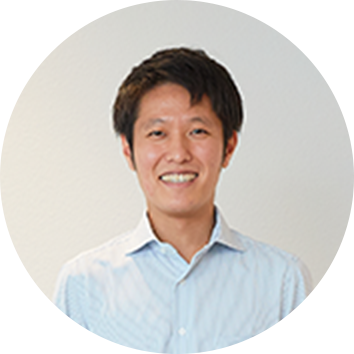

私は大学の授業がきっかけで、国内においても教育格差が広がっていることについて、強い問題意識を持つようになりました。子どもは生まれ育つ環境を自ら選ぶことはできないですよね？ だからこそ自らの力で人生を切り拓いていくための力が必要で、それを養うのが教育のはずなのに、もし社会的弱者であることを理由に満足のいく教育が受けられないのだとしたら、その子の未来は生まれた時点で閉ざされてしまったに等しくなってしまいます。まず「教育」というものに関心を持った、これが一番の理由でした。
CROSS TALK01
若手座談会
京都事務局 コンサルティング職
安藤 真理子
2019年入社／文化構想学部卒
京都市の伏見地区を担当。また、KUMONを広く普及させていくために、局内の普及活動を促進するための企画、実施のほか、教室の指導者・スタッフに向けたオンライン配信の講座を企画し、そのコンテンツ作成などにも携わっている。
京都事務局 コンサルティング職
仲地 裕太郎
2019年入社／知識工学部卒
コンサルティング職として京都市の南・東山・山科地区を担当。既存教室の発展、先生の目指す状態の実現に向けたサポートを行っている。新たな教室ネットワークの構築にも注力しており、新しく教室設置するための計画立案や設置に向けた活動も展開。
京都事務局 コンサルティング職
アマル シルザト
2019年入社／日本経済文化学部卒
京都市の長岡京・乙訓地区を担当。先生の思いを知ることを第一に掲げ、その実現を目指し、教室の現状を示す客観的なデータに基づくコンサルティングに力を注ぐ。子どもの成長は本人だけでなく、関わるすべての人の喜びにつながることが、この仕事の魅力と話す。
CHAPTER掲げる理念を本気で
実践していく、
裏表のない会社
皆さんは、どうしてKUMONに入社しようと思ったのですか？
安藤
仲地
学校の先生としても、一人ひとりにできるかぎり対応してあげたいと思っているはずですが、生徒はその子ひとりではないし、そもそもカリキュラムに基づき授業を進めていかなければならない。難しさはありますよね。
安藤
そうなんですよね。公教育というのは、個人の人生を考える教育というよりは、社会に出る、社会を構成する一員を養成するという教育という性質が強くなると思うんです。だからといって営利を目的とする民間企業にできることにも限界があるだろうなあって、実際に生活保護世帯への教育支援を行っているNPOでインターンをしていたときに感じていました。だから就職活動も教育業界に的を絞らず、長く人の成長に携われる仕事を見ていたのですが、教育業界で1社だけ、異彩を放つ会社があった（笑）。
仲地
大真面目に「世界平和」を唱えてしまうような（笑）。いずれにしろ、安藤さんの言う、弱者の立場に立った考え方にはすごく共感できます。私は理系出身で、専攻を生かそうとメーカーも回ったりしたのですが、塾の講師のアルバイトで知ってしまった「人の成長」に関わっていくワクワクするような感覚が忘れられませんでした。ただ、塾の講師をしていたときに、伸び悩む子をどうにもしてあげられなかったという苦い経験があって……。理系の世界はとくにそうなのですが、基礎学力の上に専門分野が成り立っているので、この基礎学力の向上に働きかけていこうとするKUMONの考え方が、すごく理に適った取り組みだと思いましたし、その企業理念に強く惹かれたことが私の入社理由でもあります。
アマル
私の場合は教育業界というよりも、KUMONという会社、そこで働く社員に魅了されたことが一番の理由ですね。中国のウイグルで生まれて、上海の高校を卒業し、外国語大学で日本語を学び、日本に1年間留学もしました。だけど、この間にKUMONに出会うことはなく、就職活動をはじめるまでは存在すら知りませんでした。
仲地
出会いのきっかけは会社説明会か何か？
アマル
そうです。北京で日系企業の会社説明会が開かれるというので、ホームページを見てみたら「教育研究会」というすごい名前の会社があった（笑）。もともと「人と関わる仕事」「学び合える環境」という観点から営業職を考えていたのですが、KUMONの仕事もその両方を満たしていると思って興味を持ちました。でも、上海から北京まで、ちょっと離れているんですよね。私が会場に着いたときは、すでにKUMONの説明会は終わっていました。そうしたら人事の人が、夜にもう一回開きますからというので、再び訪れると、何と私ひとりのために時間を作ってくれていました。会社のホームページには壮大なことが書かれていましたけど、人事の人たちの対応にその言葉は決して嘘ではない、この会社は裏表のない会社だと強く感じて、進行していた他の会社は辞退しました。
CHAPTER先生から頼られ、
会社からも任される、
だから自分たちの
成長速度も上がる
実際に働いてみて、入社前とのイメージに
何かギャップを感じたことはありますか？
仲地
若手に与えられる裁量の大きさは想像以上でした。まず驚いたのが、決められた仕事というものがないんです。コンサルティング活動についても、「仲地さんはどうしたい？」と聞かれ、しどろもどろになりながら答えると、「それなら、これをやった方がいいね」という助言が返ってくる。で、そこからは自分で計画を立て、実行へと移していくのですが、これが新人研修を終えたばかりの5月の話です（笑）。
アマル
でも、決して放置されているわけではありません。KUMONにはBS制度というのがあって、ブラザー、シスターと呼ばれる先輩社員がつくのですが、本当に親身になって指導してくれます。私のBSは、私が外国人だからと特別扱いはせず、レポートの書き方ひとつ、会話中の言葉づかいひとつ、しっかりチェックし正してくれました。先生との面談のシミュレーションにもたっぷり時間を割いてくれて。とてもありがたかったです。
安藤
私のBSも毎朝時間を取ってくれました。週ごとの目指す状態や活動、先生との対話方法、指導方法、教材知識など、その時々の悩みを相談すると、「自分はどうしたいのか」「そのために何を目指していくのか」「それを実現するためにどんなことをどれだけ行うのか」といった投げかけをしてくれました。そしてこれに答えることで、考えを言語化し、日々の活動のPDCAサイクルを回していくという取り組みを、1年にもわたり継続してくれました。朝の貴重な時間を私のために割いてくれたことに、今もとても感謝しています。
アマル
それから入社前とのギャップという点で、私たちがよく話しているのが、この会社は成果への意識がすごく高いということです。私たちも入社当初は理念であったり、子どもたちへの指導であったりに気を取られていましたけど、先輩たちは指導の観点だけでなく、経営の観点も持って仕事をしていることが、とても新鮮でした。当然、私たちも各教室の収支を念頭に、市場性や発展性というものを考慮に入れながら、先生たちに経営戦略を伝え、ともに解決していくことが求められています。
安藤
アマルさんのいうとおりで、新型コロナウイルスの感染が拡大した際には、経営者としての観点の重要性を強く感じました。コロナ禍は、公文式教育の優れた学習効果を再認識させてくれた一方で、今までどおりに教室を運営することが難しくなり、生徒も学習できない、それに伴い会費収入も得られないという状況になった教室も少なくありませんでした。私もそれまでは「先生」として見ることが多かったのですが、先生である前に子を持つ親であり、何より多くのスタッフを雇う「事業主」であることに気づかされ、地区担当として先生たちの人生に深く関わっているという責任の重さを痛感しました。
仲地
私たちはコンサルティング職としてキャリアも浅く、実際の公文式教室での指導や運営の経験年数は先生方には及びません。それでも先生たちは私たちを信頼し、頼ってくださいます。プレッシャーがないと言えば嘘になりますが、先生から頼られ、そして会社からも任されるというのは、自分の存在意義が感じられてうれしいですし、その期待に応えたいと素直に思います。こうした環境が、私たちの成長速度を上げてくれているのだと感じています。
CHAPTER予測できない時代に
KUMONが与えているもの
皆さんは、KUMONのどんな点に可能性を見いだしていますか？
アマル
私には忘れられないエピソードがあります。先生とは定期的な面談だけでなく、日常的に電話でコミュニケーションを取っているのですが、入社当初はまだ、電話で込み入った話ができるほどには日本語が上達していませんでした。そこで実習でお世話になった先生とは文書でやり取りすることも多かったのですが、そのやり取りは3か月で78,000字にも及んでいました。そのほとんどが、私の質問に対する先生の回答です。新入社員の成長に対しても、これほどの情熱を傾けてくださる指導者がいるというだけでも、私はKUMONの素晴らしさを感じますし、掲げる理念は世界に通じるものだと思っています。
仲地
先生たちの「人の可能性を信じて伸ばす」ことに注ぐ情熱、思いの深さには、私も頭の下がる思いでいっぱいです。塾の講師をしていたときに、伸び悩む子をどうにもしてあげられず苦い思いをしましたが、KUMONの先生たちはそうした子たちにこそ可能性を信じ、伸ばしてあげようと日々努力されています。私たちもそうした先生たちを、教材やコンサルティング活動を通じて全力でサポートしています。学校内容に準拠していなくて、ここまでシステムの整っている教育法は、ほかにはないと思うんです。
安藤
私は今こそKUMONが必要だと思っています。予測がつかない時代となり、自分で生き抜く力、自分で人生を切り拓く力が、今まで以上に必要となっています。こうした力を身に付けるには、学校教育に加え家庭教育、仲地さんがいうようにKUMONが大きな役割を担うのではないかと。
仲地
公文式学習を通じて「自学自習」の姿勢が身に付くと、人生の困難に立ち向かえるだけでなく、自分のやりたいことが見つかり、チャレンジする気持ちも湧いて、いつもワクワクしながら楽しく、豊かに生きていけると思うんですね。だからこそ私も、コンサルティング職のスキル、マインドをより磨いて、子どもたちの未来を創れる人になりたいですし、社員一人ひとりの成長もサポートしながら、KUMONに関わるすべての人が幸せな人生を歩むことに寄与できる、そんな人材へと成長していけたらと思っています。
安藤
KUMONの教室には、子どもたちだけでなく、関わるすべての人の人生を変える力があると感じています。だから、もっと多くの生徒に来てほしいですし、もっと先生になりたい人が増えてほしい。それを実現するためにも、KUMONの先生という仕事が、より憧れの仕事になるように、そんな仕事をしていきたいと考えています。
アマル
そうやってKUMONのネットワークがグローバルに広がり、KUMONで学ぶ子どもが世界中で増えていけば、きっと世界も変わるはず。偏見も差別も無知が原因であり、自分が無知であることを教えてくれるのが教育です。私は自らの多文化経験も生かしながら、日本発祥のKUMONブランドの高い学習効果、学習機会というものを、自信をもってグローバルに普及させ、少しでも世界平和に貢献できたらと思っています。
キーワードから探す
気になるキーワードからコンテンツを検索できます。
閉じる